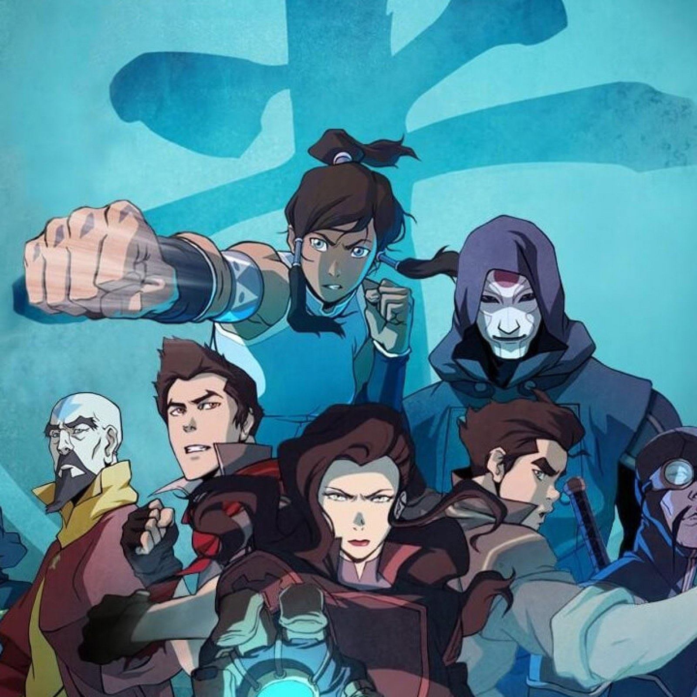

/cdn.vox-cdn.com/uploads/chorus_asset/file/20104095/legend_korra.png)
About Korra
Korra is the current incarnation of the Avatar and immediate successor of Avatar Aang. She took one many great threats and defeated them with the power of her determination and friendship.
Korra and her friends
Korra's Characteristics
- On the surface, Korra is fierce, independent, and pugnacious.
- On the inside she possesses a strong loyalty toward her friends and duty as the Avatar.
- She also has an admirable compassion and devotion, demonstrated when she expresses love toward things such as her family and friends.
Korra's Friends
Korra relies a lot on her friends and it shows all throughout the show. Click on the links below to read more about them.